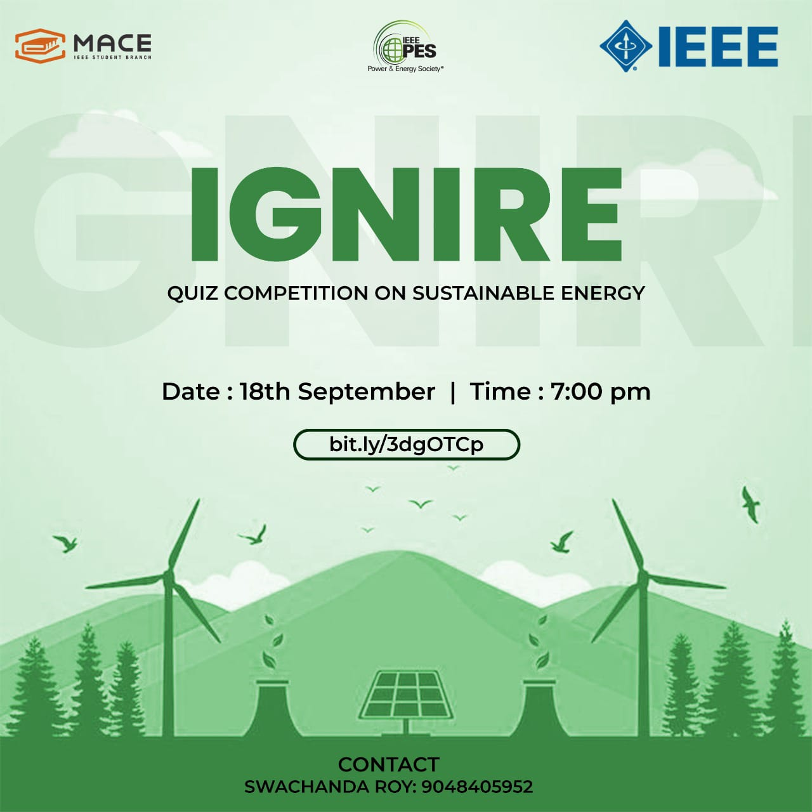
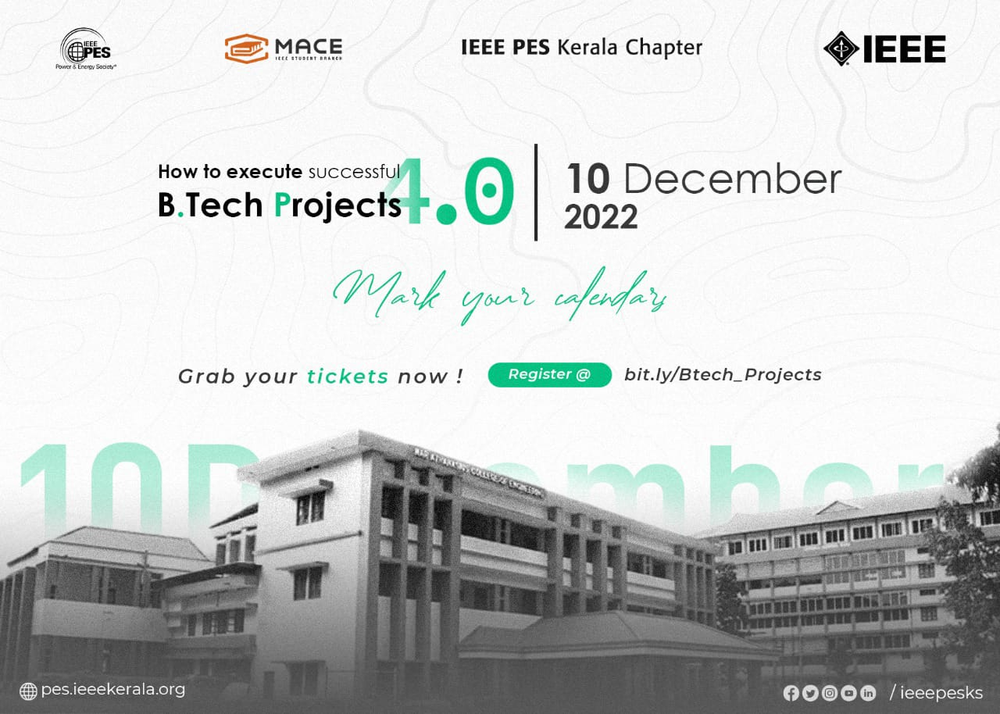
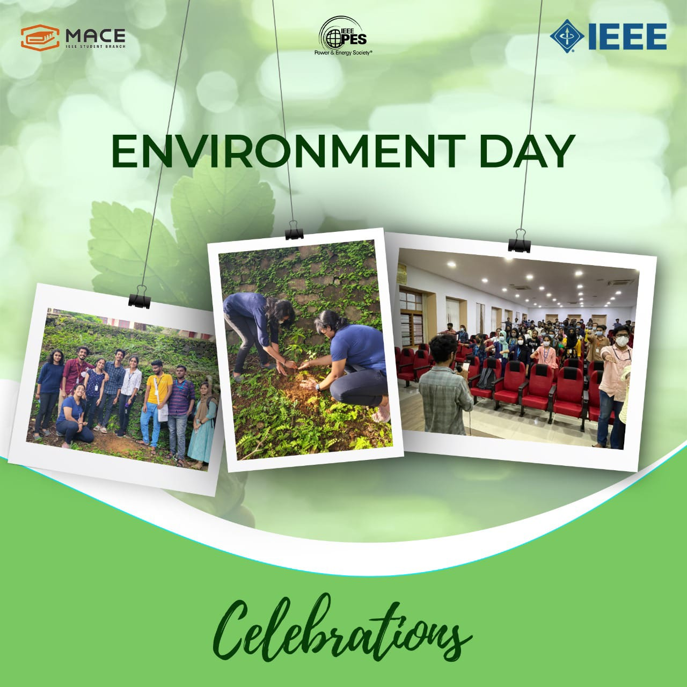
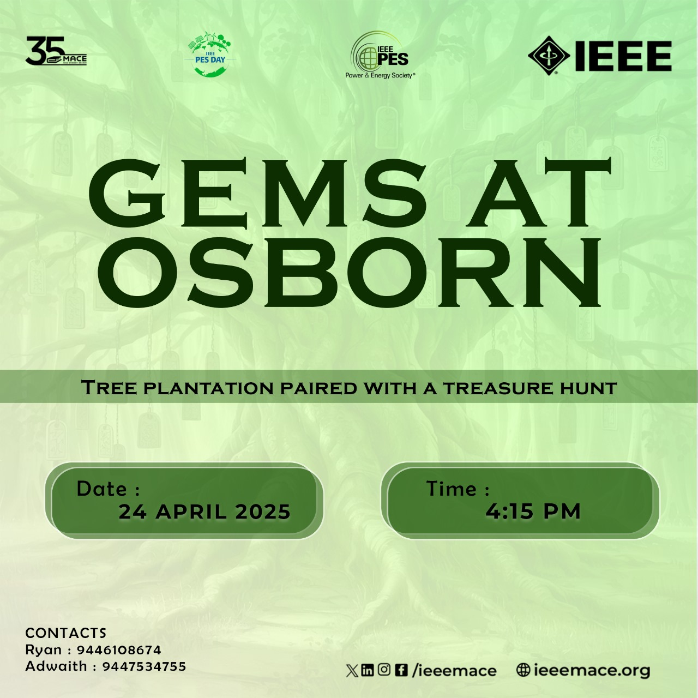
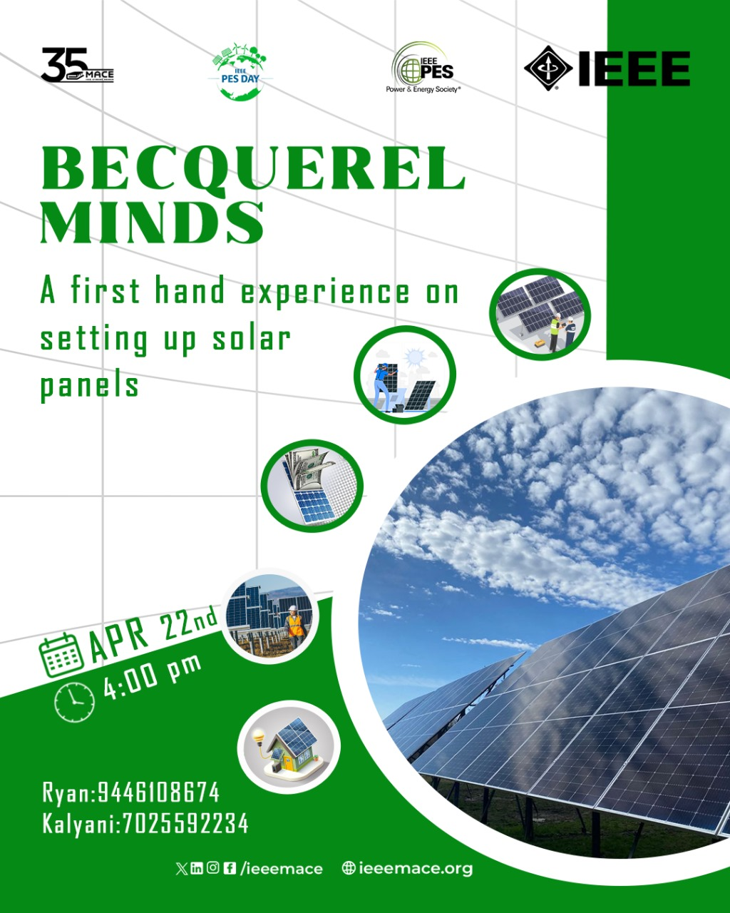

Events
Events

Stem Expo
STEM EXPO was an open event conducted by IEEE MACE SB in collaboration with IEEE PES SBC MACE aiming at students of 11th and 12th grades to get more familiarised with engineering subjects and the whole structure of the course. The event was held on the 23rd of July 2022 at Mar Athanasius College of Engineering, Kothamangalam.The event exposed participants to engineering and many got inspiration. 55 students from five different schools actively participated in the event. Responses from participants were positive in good strength.

Ignire
An online quiz competition titled "Ignire" was conducted by IEEE PES SBC MACE on 18 September 2022, from 7:00 pm to 7:30 pm (IST). This competition was aimed at the improvement of knowledge of sustainable energy and improving quizzing skills. This event was coordinated by Ms. Swachanda Roy. The participants were given 25 MCQ-type questions. Each question carries one mark.30 minutes were given to the participants to answer the questions. The contestant who scored more marks was awarded the first prize. 44 members participated in Ignire and 31 of them were IEEE members.
WoW 3.O
As a part of PES WiP Day, IEEE PES SBC MACE co-hosted the second talk session of WoW 3.0 (Women of Wisdom) tech-talk series, organized by IEEE PES Kerala Chapter in association with IEEE Women in Power Kerala, IEEE PES Women in Power R10 and IEEE Women in Engineering Kerala Section. It was held on 26th September 2022 from 7:00 PM to 8:00 PM (IST). The online talk session on the topic “Leadership and Women Empowerment” was taken by Ms. Swathi Krishna, Data Integration Manager, Technology Operation, HESTA, Melbourne, Australia.This event was coordinated by Ms. Irene Binnet, WiP Student Representative of Kochi Hub along with Ms.Alina Thomas, WiP Student Representative of IEEE PES Kerala Chapter. 20 attendees actively participated in the entire talk session from which a very positive feedback was obtained from the attendees.

HOW TO EXECUTE SUCCESSFUL BTECH PROJECTS 4.0
HOW TO EXECUTE SUCCESSFUL BTECH PROJECTS 4.0 was an online event conducted by IEEE MACE SB in collaboration with IEEE PES Kerala Chapter and IEEE PES SBC MACE aiming at engineering students of the stream Mechanical engineering, Electrical and Electronics engineering, Electronics and Communication Engineering and Computer Science Engineering to get more familiarised on implementing successful btech projects. The event was held on the 10th of December 2022 on an online platform, Google Meet.A total of 400 students participated and 292 participants were IEEE members and 108 were non-IEEE members.

Environment Day Celebrations
As a part of Environment Day Celebrations, IEEE Power and Energy Student Branch Chapter MACE conducted an oath taking ceremony on 15th June 2022, 4:30 PM. The ceremony was held amidst the entire team IEEE MACE SB meeting and the oath was rendered by the Student Branch Chair, Mr. Aravind Reghunath. Besides, a plant a sapling initiative was also taken by the PES Student Branch Chapter which was conducted on 27th June 2022 from 4:30 PM to 5:30 PM. Students took the initiative to plant 2 saplings within the college campus in order to nurture the environment and provide for its needs. About 92 students participated in the oath taking ceremony and 10 students participated in the plant a sapling initiative.
Exploring PES
The awareness program session of IEEE PES SBC MACE, ‘Exploring PES’ was conducted on 18th March 2022 at 7:00 pm via Google meet. The meeting was hosted and handled by Ms. Irene Binnet, Chairperson of PES SBC MACE and Ms. Alna Maria Ben, Vice Chair of PES SBC MACE. The session was very interactive and informative. It also greatly helped spark an interest among the students in PES, which has greatly contributed to active participation and volunteering. The session was attended by around 40 participants. The session ended by 8:00 pm.

Gems At Osborn
In line with PES DAY Celebrations 2025-PESTO 4.0, IEEE PES MACE SBC hosted a tree plantation drive to make the younger generation more aware and responsible about environment conservation. The event started at 4:15 P.M with a small introductory talk about IEEE PES DAY Celebration 2025 and its agenda for this year’s event.Tree samplings of Gooseberry and Stardew were planted by all the participants giving them an idea on the necessity of tree plantation in the current time. A small treasure hunt contest was held to make the event more cheerful and lively. The samplings were planted and the participants reported an affectionate feeling towards the plants they planted. The event was dispersed at 5:00 P.M with a feeling of satisfaction in the face of participants.

Becquerel Minds
In line with PES DAY Celebrations 2025-PESTO 4.0, IEEE PES MACE SBC hosted a Solar Panel workshop to raise awareness about the importance of green and sustainable energy sources.The event was named ‘Becquerel Minds’ to pay tribute to the scientist Hendry Becquerel who discovered photoelectric effect and it was also a call for young minds to be the pioneers of clean energy for a better tomorrow.The event demonstrated the working of a solar panel and helped the participants understand the simple process encouraging them to initiate steps in their neighbourhood for setting up solar panels.The participants also got a hands on experience on connecting a solar panel and they reported to have gotten a new experience that would help them take new plans and actions.The event was conducted by Ryan Nelson, IEEE PES Secretary MACE SB,Kalayani B,IEEE Women In Power MACE SB and Adwaith T.M,IEEE PES Treasurer MACE SB.The event concluded by 5:30 P.M